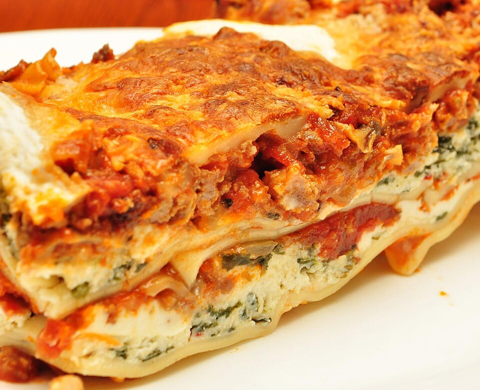

Lasagna Recipe

>
jeffreyw,
CC BY 2.0, via Wikimedia Commons
Ingredients
Meat Sauce
- Ground Beef
- Italian Sausage
- Diced Onions
- Minced Garlic
- Crushed Tomatoes
- Tomato Paste
- Tomato Sauce
- Dried Basil
- Dried Oregano
Cheese Sauce
- Ricotta Cheese
- Eggs
- Grated Parmesan Cheese
- Fresh Parsley
- Salt And Blackpepper
Cooking Instructions:
Meat Sauce
- In a large pot over medium heat,
brown the ground beef and Italian sausage until completely cooked through,
breaking it apart with a spoon. Drain any excess fat.
- Add the diced onions and minced garlic to the pot and cook until the onions are translucent.
- Stir in the crushed tomatoes, tomato paste, dried basil and dried oregano.
- Simmer the sauce for at least 30 minutes, stirring occasionally.
Preparing Main Components:
- While the sauce simmers, bring a larege pot of salted water to a boil. Cook the lasagna noodles according to the package instructions,
then drain them and lay them flat on wax paper to prevent sticking.
-
In a medium mixing bowl, combine the ricotta cheese, eggs,
grated parmesan, fresh parsley, salt and black pepper. Mix until well combined.
Assembly And Baking:
- Preheat the oven to 375°F (190°C).
- In a 9x13 inch baking dish, spread a thin layer of meat sauce on the bottom.
- Place a layer of cooked lasagna noodles over the sauce.
- Spread a layer of the ricotta cheese mixture over the noodles.
- Sprinkle a layer of shredded mozzarella cheese over the ricotta mixture.
- Repeat the layers until all ingredients are used, finishing with a layer of meat sauce and a generous amount of mozzarella cheese on top.
- Cover the baking dish with aluminum foil and bake for 25 minutes. Remove the foil and bake for an additional 25 minutes, or until the cheese is bubbly and golden brown.
- Let the lasagna cool for about 10-15 minutes before serving. Enjoy!
Back to Home
Links to other recipes:
Note:
This recipe may or may not end up tasting like dog shit, as I have never actually made it before, and I just asked
ChatGPT to generate a recipe for me.
.jpg){kind=link}